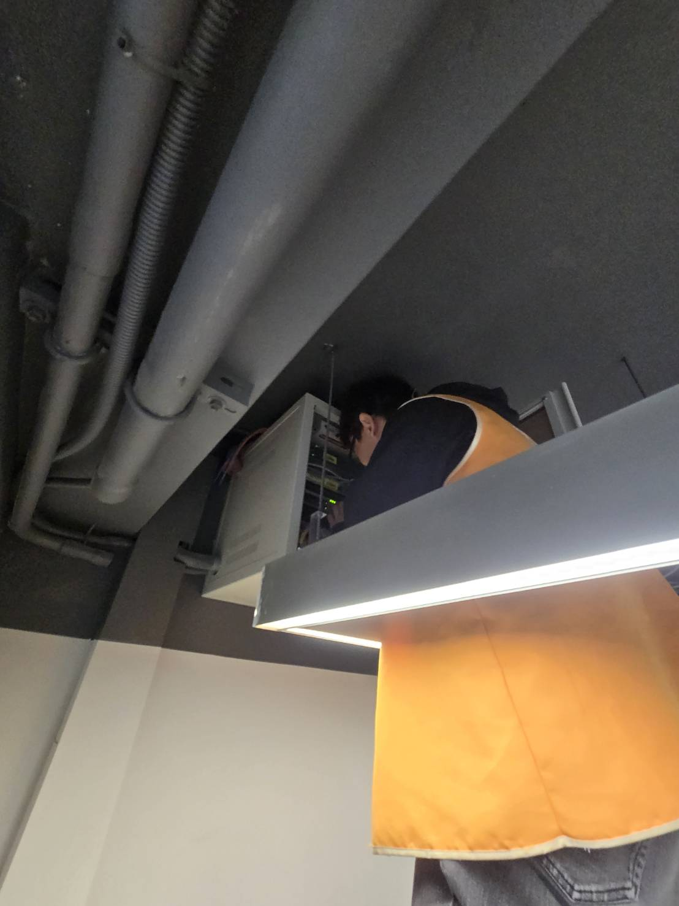
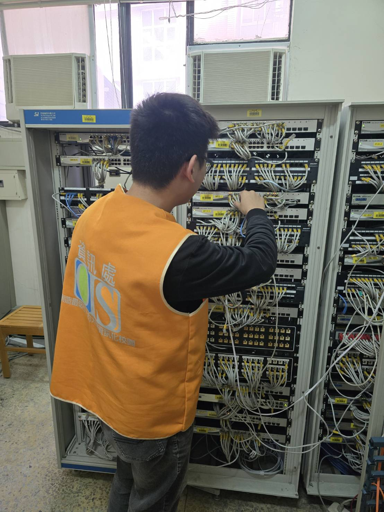
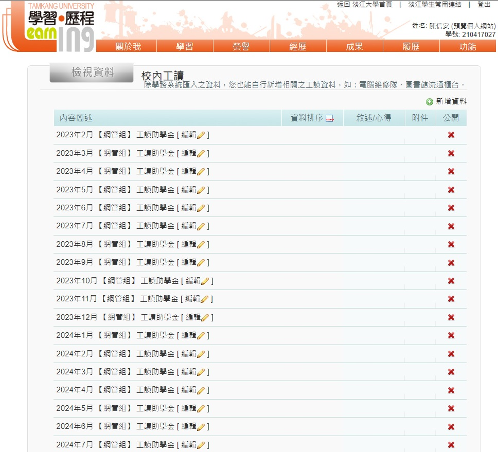
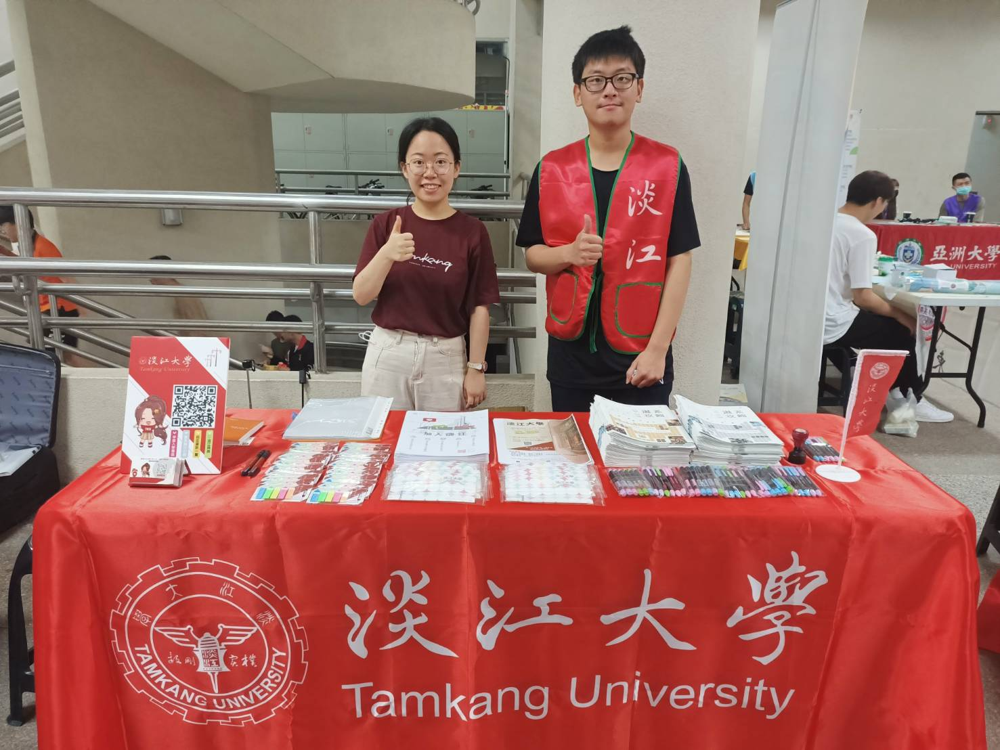
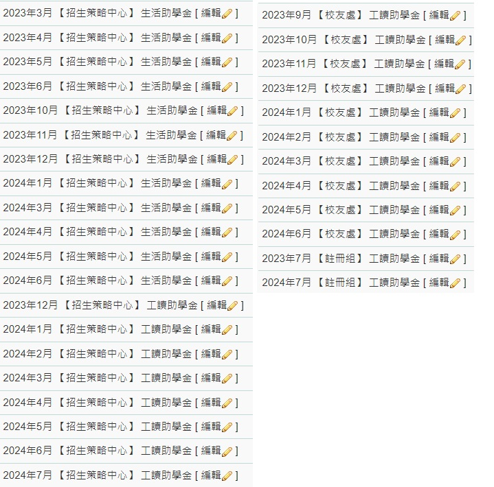

在我大二時，我先到了我家附近的火鍋店工作了一段時間，這期間由於火鍋店會遇到外國客人，
且火鍋店菜單沒有圖片，所以後來我應用了課堂所學的web技術，做了有圖片的英文版菜單(如下連結)。
火鍋店菜單頁面

校內工讀部分
在我大三下時，我來到了淡江的資訊處網管組工讀，平常就是去幫校內職員解決網路問題，
可能是網路線問題或者是hub或router問題，甚至是機櫃switch的問題，如果是網路線頭鬆脫那就是重新做線
，工作內容其實有點像網路概論的實作課，我們的工作就是去排查這些問題，讓user有良好的網路環境。
學校工讀證明



校內工讀部分2
除此之外，我也有到教務處招生策略中心工讀，主要是幫忙處理招生資料，以及協助招生活動，因為之前火鍋店的打工經驗，
所以學校職員偶爾會叫我跟職員搭配到高中端招生(下圖圖右是我)，到高中端要跟高中生介紹自己的學校，好讓對方更認識我們的學校，
甚至到最後來就讀，在這邊我了解到了溝通的重要性，不只在招生，像當初在做專題時，也是因為有良好的溝通，才能順利完成專題。
在工作上，假如大家的coding能力差不多，那溝通能力就是一個很重要的競爭力，我認為這方面在同儕間我是具有優勢的。

學校工讀證明
